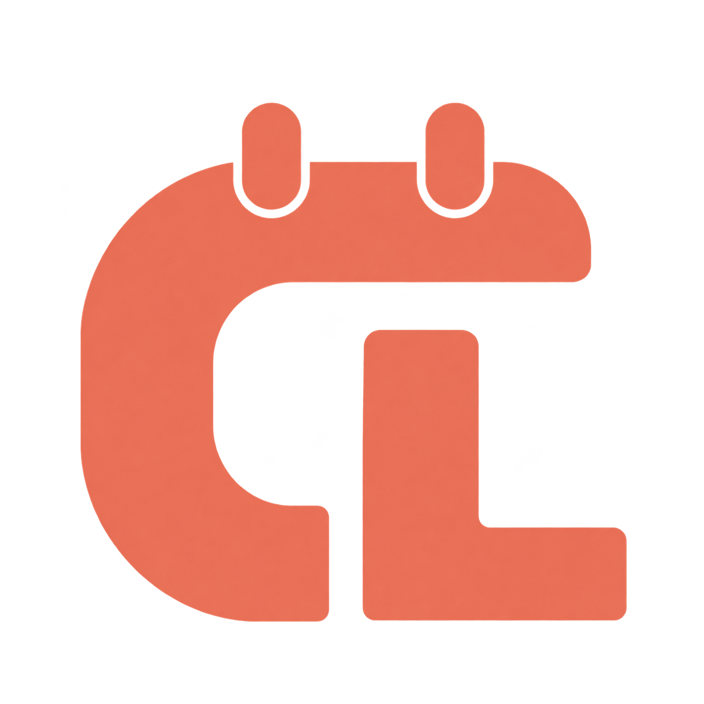

Plans change. Your calendar follows.
See the previous and new dates when a deadline changes. CanvasLink periodically checks your feed, updates tracked calendar events, and adjusts outstanding reminders.

CanvasLinkTHE STUDENT SIDEKICKA LITTLE BOT. A LIGHTER SEMESTER.
Canvas has your deadlines. CanvasLink brings them into your life—with reminders you control, your week at a glance in Telegram, and optional Google Calendar sync.
Open source / Built for Canvas students / Less tab hopping
THREE APPS YOU KNOW.
ONE LESS THING TO DO.
LESS ADMIN, MORE ACTUAL LIFE
For the assignments, quizzes, and exams.
And everything you’d
rather be doing.
See the previous and new dates when a deadline changes. CanvasLink periodically checks your feed, updates tracked calendar events, and adjusts outstanding reminders.
Auto-sync your exams, review each assignment, skip the extras. Apply one default, then customize each course and assignment type. Toggle any setting later. Reminder preferences are separate from calendar sync modes.
Find your sync styleReminders start one day before. Choose an hour, a week, or multiple offsets; override them by course and assignment type. Quiet hours and Off are always an option.
Browse today, the next seven days, or all upcoming work. Filter by course, and opt into daily or weekly agendas at a time that suits you.
Mark work Done, undo it, or snooze for an hour. Completion stays in CanvasLink—it never submits work to Canvas or deletes a calendar event.
Add personal tasks in Telegram and give assignments an earlier personal target. Your official Canvas deadline stays visible and unchanged.
Google events start in a separate CanvasLink calendar. Choose another calendar, course colors, and a title prefix. Timed and all-day events are supported.
Get alerts for repeated connection failures and recovery, with a reconnection prompt when Google authorization expires. Upcoming lists show the last successful Canvas check.
YOUR COURSES. YOUR RULES.
Try the three sync modes with a sample assignment. In the bot, you can mix and match them across your courses and assignment types. These controls govern calendar syncing; reminders have their own settings.
Get a Telegram confirmation card for each new item. Decide whether to add it to your calendar or ignore it.
CS2040 · Data Structures
A LITTLE NUDGE. A CLEARER WEEK.
Start with a reminder one day before, then make it yours. Mark a task Done and it leaves your outstanding agenda. Snooze when you need a little more time.
Try it here, then find the real controls in /settings.
Quiet hours start at 22:00–08:00; scheduled agendas are optional.
Due tomorrow · 17:00
Scheduled agendas are off until you enable them.
One day before by default. You’re in control.
Demo only. No messages are sent and no accounts are changed. Reminder and agenda samples show different example days.
A SMALL SETUP. A BIG SIGH OF RELIEF.
Open Calendar in Canvas, copy your Calendar Feed link, and send it
to the bot after /start. Preview the detected courses
and items before choosing your preferences—even an empty feed is
welcome.
Use the authorization button to link Google and sync into a dedicated CanvasLink calendar. Or skip Google and use Telegram reminders, agendas, and personal tasks.
Your Google password stays with Google
Choose one default mode or customize individual types. Reminders
begin one day before. Toggle any mode or notification preference
anytime in /settings; /help explains
every command.
SMALL BOT. THOUGHTFUL ENGINEERING.
CanvasLink is an independent, open-source project that connects the tools students already use. Explore the code, run your own instance, or help make the next semester a little easier.
Explore the sourceGo + PostgreSQL, with durable calendar jobs and retries designed to prevent duplicates.
Google OAuth with PKCE, encrypted secrets at rest, and controls restricted to private chats.
Automatic removal is limited to verified CanvasLink events. Missing items get extra checks and a grace period.
BEFORE YOU LINK UP
CanvasLink reads Canvas LMS iCal feeds. If your Canvas account provides a Calendar Feed link, you can connect it. Only items included in that feed can be synced; course and item detection depends on the information Canvas includes.
The bot checks feeds periodically. The default interval is one hour, and the person hosting the bot can configure it. Updates also depend on when Canvas publishes changes to your feed; this isn’t an instant notification service.
No. Reminders, agendas, upcoming lists, and personal tasks work in
Telegram without Google. Connect using
/connect_google to sync Canvas events into a separate
CanvasLink calendar. Personal tasks stay in Telegram.
Reminders are enabled one day before by default. Choose up to five
offsets (from one minute to 30 days), turn them off, or override
them per course and assignment type in /reminders.
They also cover non-ignored items awaiting calendar approval.
Quiet hours default to 22:00–08:00 in your timezone. Whole-day
offsets for all-day events arrive at 09:00 on the reminder day.
Delivery is checked every minute while the bot is running.
Scheduled agendas start off. Enable them in
/agenda and choose a local delivery time; the initial
choices are daily at 08:00 and weekly on Sunday at 18:00. Quiet
hours apply. You can always use /today,
/week, or /upcoming after setup without
enabling scheduled messages.
No. Done only tracks completion inside CanvasLink and stops its reminders. Undo restores future reminders. It does not submit anything to Canvas or remove a Google event. A personal target changes reminder timing while preserving the official deadline; if Canvas moves the deadline before your target, reminders fall back to the official deadline.
Yes—open /settings anytime. Choose sync modes,
reminder offsets, agenda times, timezone, calendar destination,
colors, and course title prefixes. A destination change affects
newly tracked events; existing events stay in their recorded
calendar. Colors and title preferences apply on the next create or
update.
Disconnecting Canvas removes feed-backed planner items and course
settings while retaining Google events, personal tasks, and
notification preferences. Disconnecting Google removes its
authorization but keeps events and the Telegram planner. A
separate, confirmed /reset removes verified
CanvasLink-owned events before deleting local data.
Yes. CanvasLink is MIT-licensed and runs independently. You’ll need Go, PostgreSQL, a Telegram bot token, and Google OAuth credentials if you want calendar sync. The README walks through setup. GitHub Pages hosts this website; the bot needs a separate running server.
MAKE ROOM FOR THE GOOD STUFF
Give your deadlines a home in the calendar you already use.
Try the interactive demo Your future self says thanks.